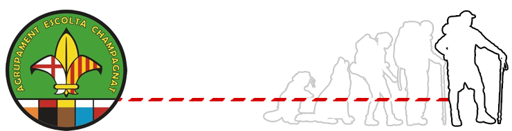

Róvers
Qui som?
L’etapa RÓVER és on un grup de joves viu de la seva pròpia realització, fent patent el seu esperit escolta i es proposa esdevenir adult emprant, a l’estil escolta, la llibertat que Déu posa a les seves mans mitjançant el servei a la comunitat i formant part activa de l’agrupament i del C.M.S.
El grup en el qual es desenvolupa l’etapa róver s’anomena CLAN. Aquest està formant per joves de 17 a 22 anys. Si dins d’un agrupament hi ha diversos clans el seu conjunt s’anomena UNITAT.
El monitor/a de róvers s’anomenarà CONSELLER, perquè és sobretot orientador del progrés individual i de grup.
El seu LEMA és: SERVIM!!